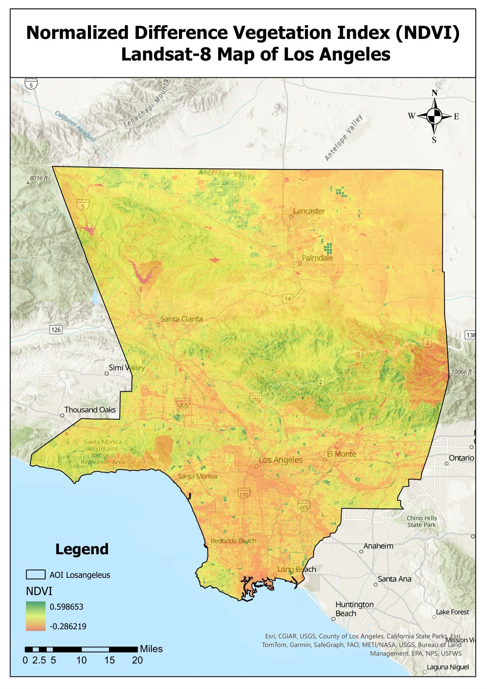

Remote Sensing & Earth ObservationFig. 1 NDVI map of Los Angeles County from Landsat 8
NDVI Map of Los Angeles County (Landsat 8)
Quick-turnaround NDVI computation from Landsat 8 for Los Angeles County, with a summary layout in ArcGIS Pro.
- Location
- Los Angeles County, USA
- Year
- 2025
- Client
- Upwork client
- Tools
- Landsat 8, ArcGIS Pro, NDVI


Challenge
Produce a clear NDVI map of Los Angeles County within a strict 20-minute time limit.
Approach
- Selected pre-processed Landsat 8 surface reflectance to save time
- Calculated NDVI = (NIR − Red) / (NIR + Red) and clipped it to the county
- Applied a green-to-orange ramp and a pre-built layout template
Results
- NDVI ranged from −0.29 to 0.60 across the county
- Healthy vegetation in the mountains and parks stands out from the urban basin and barren areas